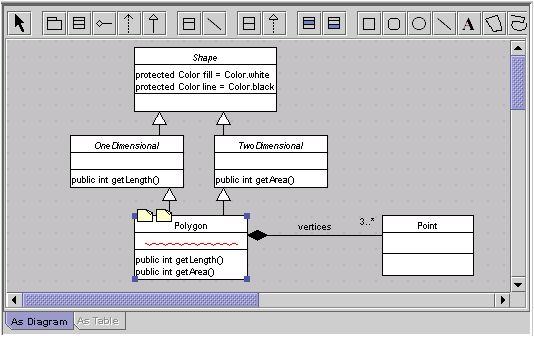

Argo's Editing Pane is the main work area. You use this pane mainly to edit diagrams. However you can also use this pane to edit tables that list the contents of diagrams or other design objects. Several tabs are located at the bottom of this pane to indicate the different ways in which the main object can be viewed and edited. ArgoUML includes an "As Diagram" tab, and if you download optional jar files you may also see tabs labeled "As Table" and "As Metrics".
Click on one of the tabs in the image above to learn more about it. (not-done-yet)